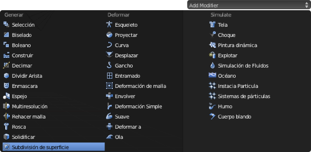
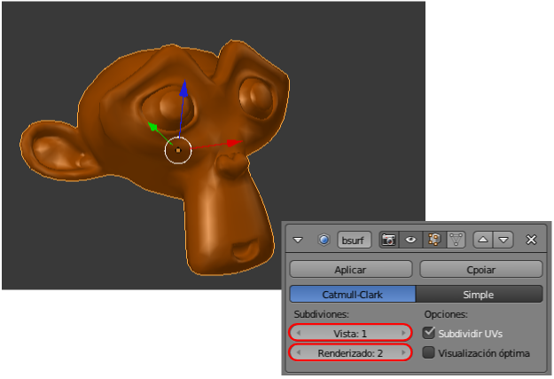
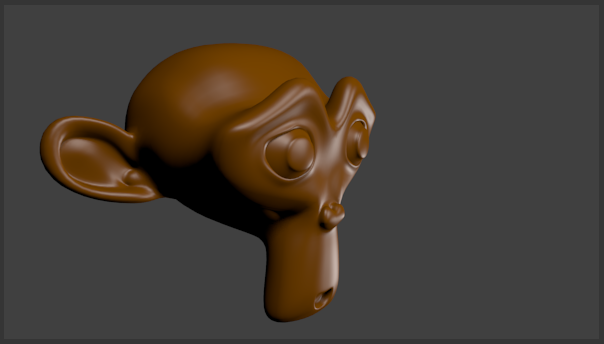

Subdivisión
Para continuar mejorando la malla de Suzanne, en el editor Paneles nos vamos a Modificadores y, tras pulsar el botón Add Modifier, escogemos Subdivisión de superficie (a partir de ahora simplemente Subdivisión).
Se despliegua la botonera con sus opciones y en el editor Vista 3D los efectos son inmediatos.
El campo Vista con valor 1 hace referencia a la cantidad de subdivisiones que se producen. En cada subdivisión una cara se divide en cuatro y eso hace que la sensación de suavizado aumente considerablemente. Sin embargo en ese mismo cuadro se está dando la orden de que el valor de la subdivisión para Renderizado sea de 2; es decir que cada cara se divide en dieciséis con lo que el resultado es espectacular.
Atención
No es conveniente trabajar a valores altos en Vista porque eso consume muchos recursos del ordenador; es un clásico recomendar no pasar de Vista: 2 ni de Renderizado: 3.